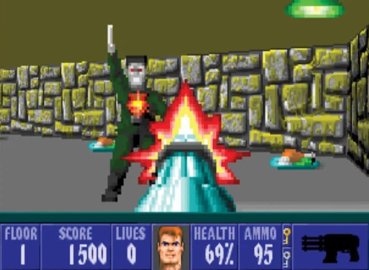
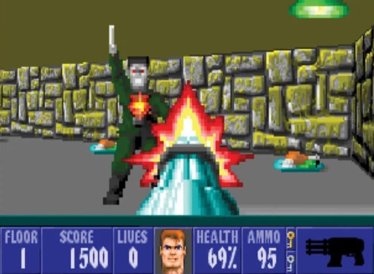
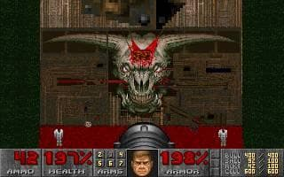
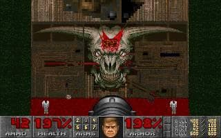

Шутери Дев'яностих
короткий зміст
Wolfenstein 3D (1992)
Цю гру можна назвати прадідом жанру шутер (тобто
по простому - стрілялка). Wolf 3D розроблена
компанією id Software і видана компанією Apogee
Software 5 травня 1992 під DOS. Гра входить до списку
«Найкращих ігор усіх часів».
В Wolfenstein 3D гравець керує солдатом, що
намагається втекти з однойменної нацистської
фортеці; йому протистоїть безліч озброєних охоронців і
сторожових псів. Будівля наповнена таємними
кімнатами, де зберігаються різного роду коштовності,
харчові продукти та медичні аптечки, а також різна
зброя та боєприпаси. Гравець проходить рівні гри, в
кінці кожного сюжетного епізоду відбувається сутичка
з фінальним босом — особливо сильним
супротивником, для перемоги над яким потрібно
чимало зусиль з боку гравця. Для проходження епізоду
досить завершити тільки 9 з 10 рівнів. Десь у восьми
перших місіях кожного епізоду знаходяться
замасковані виходи на секретний 10-й рівень. Такий
рівень у третьому епізоді прославився тим, що
являв собою одну з варіацій відомої гри Pac-Man з тією
різницею, що на привидів гравець дивився з точки
зору Пакмана.
P.S. Я у цю гру зараз граю, але вона для мене трішки
нудна, немає висоти та карти (величезний лабіринт).
КАДРИ З ГРИ
 


ЗБРОЯ
Пістолет
Автомат
Кулемет


Doom (1993)
Дум можна назвати батьком сучасних шутерів, саме
він, можна сказати затвердив жанр, шутер як такий.
Випущена компанією id Software 10 грудня 1993
року, один з найбільш відомих та популярних шутерів
від першої особи.
Гравцеві пропонується взяти на себе роль
піхотинця, що опинився на базі Фобосу, де внаслідок
невдалого експерименту в наш світ прорвалися
демони з Пекла. Піхотинець мусить боротися з
демонами, щоб вижити, вирішувати просторові і
зрідка логічні завдання, шукати сховки зі зброєю,
боєприпасами та амуніцією. Ігрові рівні є
заплутаними лабіринтами з коридорів і кімнат, де
знаходяться численні двері, ліфти, шахти, секретні
приміщення і різнокольорові ключі й кнопки для їх
відкриття. Саме оточення часом є небезпечним:
підлога залита лавою, кислотами різної сили, водою, де
можна втонути, отруйними відходами. Ігровий процес
багато в чому ґрунтується на складності та
інтерактивності оточення. На деяких рівнях є
телепорти, які миттєво переносять гравця в інше місце.
Doom 2: Hell on Earth (1994)
Дум 2 недалеко відійшов від свого батька, фактично це
той самий Дум, за винятком декількох змін: додали 7
нових ворогів, вузькі двері, які швидко відкриваються
і закриваються, 1 нову гвинтівку - двоствольний
дробовик, нові декорації та фінальний босс - Ікона гріха.
Події гри починаються незабаром після фіналу Doom.
Гравець знову керує безіменним піхотинцем. У фіналі
попередньої частини розправившись із силами Пекла
на Фобосі та Деймосі, він телепортується на Землю,
думаючи, що планеті нічого не загрожує. Та озирнувшись,
піхотинець бачить палаюче місто.
Демони прориваються у все більших кількостях з
невідомого місця й наповнюють Землю і руйнують
міста по всій планеті, винищуючи населення та
обертаючи його на чудовиськ. Аби врятуватися,
людство будує величезний космічний корабель для евакуації.
Він отримує повідомлення від втікачів про те, що
вони знайшли місце, звідки у нашу реальність
вторглися сили Пекла. Морпіх добирається до брами
між вимірами, але не бачить способу закрити її. У
пошуках рішення він вирушає в Пекло. Врешті-решт
герой знаходить Ікону Гріха, чудовисько, яке керує
вторгненням. Піхотинець вбиває його, в агонії демон
руйнує Пекло, і вторгнення на Землю припиняється.
Логотип гри
Детальніше про гру - WikiКАДРИ З ІГОР
Doom
Doom 2
 

ЗБРОЯ
Doom

Кулак
Бензопила
Пістолет

Дробовик

Кулемет
Ракетниця

Плзаменна гвинтівка

БФГ9000
Doom 2

Двоствольний дробовик
ВОРОГИ
Doom
Зомбі

Зомбі з дробовиком

Імп

Демон

Загублена душа
Какодемон
Барон Пекла
Doom 2
Зомбі з кулеметом

Ревенант
Лицар Пекла
Арч вайл
Арахнотрон

Манкубус
Елементаль болі
БОССИ
Doom

Кібердемон

Спайдер Мастермайнд
Doom 2

Ікона гріха
Heretic (1994)
Єретик, це той самий дум, але випущенний іншою
компанією, та сеттинг змінився з майбутнього на
середньовіччя. Єдина велика зміна в Єретиці, це -
інвентар в якому є різні речі , які можуть допомогти у
складній ситуації. Розроблена в 1994 році компанією
Raven Software і видана id Software.
Головним героєм є ельф на ім'я Корвус, але його
особа з'ясовується тільки в продовженні гри, в Heretic
II. Оригінальна версія Heretic складалася з трьох
епізодів, пов'язаних між собою текстами, що
з'являються після проходження фінального рівня;
кожен епізод складався з декількох рівнів. Пізніше
була випущена гра Heretic: Shadow of the Serpent Riders
— особлива редакція, що містить два «додаткових»
епізоди.
До речі, забув додати, у грі з'явилася можливість
дивитися вгору - вниз.
Hexen: Beyond Heretic (1995)
Гексен - це, грубо кажучи, продовження Єретика.
У грі з'явилися нові фішки: тепер гра поділена не на
рівні, а на хаби - великі карти з порталами на інші
карти поменше; також з'явилася можливість вибрати
одного з героїв, за якого ти будеш грати - це Боець,
Клерик та Маг. У них різна зброя та інвентар.
В основі сюжету лежить той же принцип, що і в
грі Heretic: гравець — єдиний представник своєї раси,
що залишився в живих у світі, захопленому одним із
Зміїних вершників. Єдина відмінність — у Hexen
вижили три герої. В однокористувацькому режимі
вони діють як би незалежно один від одного, а в
розрахованому на багато користувачів - можуть
об'єднати свої сили. Крім того, до них може
приєднатись четвертий.
У плані геймплею автори Hexen значно
урізноманітнили монотонність стандартного шутера
від першої особи: крім винищення монстрів гравцеві
доводиться вирішувати квестові завдання, які в
основному зводяться до пошуку вимикачів і дверей,
які вони відкривають. На відміну від ігор Doom та
Heretic з'явилася можливість повертатися на раніше
пройдені рівні. Складність гри полягає і в тому, що
кнопка, натиснута на одному рівні, може відкрити
двері на іншому, таким чином, гравцеві доводиться
часто подорожувати між рівнями і шукати двері, що
відкрилися. Деякі об'єкти активуються лише після
натискання всіх потрібних кнопок на кількох рівнях
поспіль.
КАДРИ З ІГОР
Heretic


Hexen


ЗБРОЯ
Heretic

Ельфійська паличка
Ельфійський арбалет
Кіготь дракона

Пекельний посох

Стрижень Фенікса
Вогняна булава
Hexen

Сокира (Боець)

Молот (Боець)
Меч (Боець)

Вогонь (Клерик)
Духова пушка (Клерик)
Заморозка (Маг)
Кривавий кристал (Маг)
ВОРОГИ


БОССИ
Heretic
Залізний Ліч

Молотавр
Д'спаріл на змії


Duke Nukem 3-D (1996)
Дюк вже більше відрізняється від попередніх ігор.
В ньому з'явилася особлива фішка - можна підривати
предмети та тріщини у стінах. Також стало більше
зброї. До речі, тут головний герой розмовляє, та пускає
різні жарти. Розроблена 3D Realms.
Події гри відбуваються на планеті Земля, «десь на
початку 21-го століття». Гра багата на різноманітні
локації: кінотеатр для дорослих в захопленому
прибульцями Лос-Анджелесі, японський ресторан,
затоплене місто, космічні станції, військові бази та
пустелі з глибокими каньйонами і таємничими печерами.
У грі багато натяків та пародій на популярну
американську культуру, зокрема у висловлюваннях
самого Дюка, які були взяті з таких відомих фільмів як
«Щелепи», «Вони живуть», «Зловісні мерці 2», «Брудний
Гаррі», «Кримінальне чтиво» та «Чужі». У самій грі
можна знайти трупи таких відомих персонажів як
Люк Скайвокер, Індіана Джонс, головний герой серії
ігор «Doom» та розтрощений скелет робота T-800 з
фільму «Термінатор». Обкладинка гри пародіює
обкладинку фільму «Армія темряви», а Дюк позує як
Еш Вільямс, головний герой стрічки.
Shadow warrior (1997)
Тіньовий воїн мало чим відрізняється від Дюка. Тут
герой теж жартує, вбиваючи ворогів, теж можна
підривати предмети, але в цих іграх різний сеттинг -
якщо в Дюці це були космічні кораблі з прибульцями,
то в Тіньвому воїні це японські храми із монстрами.
Теж розроблена 3D Realms. Тут з'явився альтернативний
вогонь для зброї на праву кнопку миші.
Пропрацювавши багато років "воїном тіні" -
охоронцем і виконавцем різної брудної роботи - у
могутній корпорації "Зілла", Ло Венг дізнається про
плани корпорації закликати монстрів з інших вимірів
і завоювати світ, і залишає компанію. Дізнавшись, що
колишній найманець може перешкодити її планам,
корпорація посилає своїх підручних убити його.
Протягом гри Венг виявляє, що люди Зілли вбили
його вчителя, і ставить за мету помститися.
На відміну від більшості ігор того часу в Shadow
Warrior навіть, здавалося б, слабкі вороги можуть
завдати дуже серйозних проблем. Майже всі вони
мають потужну зброю, а вже друга-третя атака
ближнього бою дуже часто виявляється смертельною
для гравця. Найкраще підібрати для кожного виду
супротивника певну зброю, використання якої
допоможе уникнути неприємностей.
Логотип гри
Детальніше про гру - WikiКАДРИ З ІГОР
Duke Nukem 3-D
Shadow warrior


ЗБРОЯ
Shadow warrior
Сюрикени

Штурмова гвинтівка
Узі
Ракетниця
ВОРОГИ

БОССИ
Blood (1997)
Блад відрізняеться від двох попередніх ігор тільки
тим, що в ньому з'явились воксельні (тривимірні)
декорації. Блад можна навіть назвати грою жахів за
його атмосферу, кривавість, потворних ворогів (в
хорошому сенсі). Єдиний мінус Блад - це його
дисбаланс, звичайний культист може тебе вбити з
трьох пострілів. Розроблена Monolith Productions
Головний герой на ім'я Калеб стає обраним культу.
Однак через деякий час темне божество Чорнобог,
якому поклоняється культ, побоюючись зростаючого
впливу Калеба, звинувачує його в зраді і доручає своїм
поплічникам вбити його. Через 20 років після смерті
Калеб воскрес у вигляді ходячого мерця. Калеб вбиває
поплічників і самого Чорнобога.
КАДРИ З ГРИ
ЗБРОЯ
Сигнальний пістолет

Обріз
Автомат Томпсона
Напалмомет
Quake (1996)
Про Квейк багато сказати не можу, бо її ще не
пройшов. Єдине що можна сказати про різницю - це
справжня, а не псевдо, тривимірна графіка, вороги
розлітаються на тривимірні шматки.
Розроблена id Software. Уряд розробив робочий
прототип телепортаційної брами під назвою «Slipgate».
Проте звідти почали наступ орди ворожих чудовиськ,
керованих кимось, кому дали кодове ім'я «Струс»
(Quake). Для протидії цим ворогам посилають бійця
Рейнджера (Ranger), котрим і керує гравець. Він мусить
відшукати в чотирьох ворожих вимірах руни, з
допомогою яких відкрити прохід до істоти, яка керує
вторгненням і знешкодити її. Складність гри має три
рівні та обирається шляхом входу в один з трьох
тунелів перед початком нової гри. Секретний
четвертий рівень можна відкрити, відшукавши
прихований вхід до нього.
Quake 2 (1997)
На жаль, у Квейк 2 я взагалі не грав - не вдалося
завнтажити її, тому про неї нічого сказати не можу, але
батько каже, що йому у дитинстві ця гра дуже
подобалась. Теж розроблена компанією Id Software.
Гра витримана в науково-фантастичному стилі.
Гравець виступає в ролі солдата, який бере участь в
операції «Владика» (англ. Overlord). У відчайдушній
спробі захистити Землю від інопланетного
вторгнення, земляни починають контратаку на рідну
планету ворожої кібернетичної цивілізації строґґів
(англ. Strogg) — Строґос. Головною метою операції є
закриття порталу, через який строґґи переправляють
свої війська на Землю.
На відміну від Quake, в цій грі рівні різноманітніші,
часто складаються з кількох секцій, які гравець
повинен не просто почергово проходити, а
повертатися в попередні для активації раніше
недоступних дверей, механізмів. Трупи переможених
ворогів лишаються на місці, до них з часом злітаються
мухи, у вже зачищених приміщеннях виникають нові
вороги. Гравець бачить світ очима свого персонажа
більш реалістично — приціл трясеться, боєць
перекладає зброю в руках, ніби хоче взяти її
позручніше. Вороги мусять перезаряджати зброю,
можуть несподівано атакувати перед смертю.
Спецефекти набули реалістичності, наприклад, вибухи
мають грибоподібну форму, а постріли над водою
лишають на ній брижі.
Логотип гри
Детальніше про гру - WikiКАДРИ З ІГОР
Quake

Quake 2
ЗБРОЯ


ВОРОГИ
БОССИ
Half-life (1998)
Халф лайф можна з упевненістю назвати батьком
усіх сучасних шутерів таких, як CS Go, Fortnite, Overatch,
PUBG, Call of Duty і тд. Вона дуже відрізняється від усіх
перелічених вище ігор. У ній ми можемо взаємодіяти з
навколишнім середовищем, з ученими, з охоронцями.
У грі з'явилася повноцінна перезарядка на клавішу R.
У цій грі сюжет ровивається по мірі проходження, і
гра не переривається на рівні, а йде прямою лінією від
початку до кінця. Розроблена Valve Software.
Half-Life використовує поширений сюжет про
науковий експеримент, який пішов не за планом. Дія
відбувається в таємному науково-дослідному
комплексі «Чорна Меза», де стається катастрофа, що
спричиняє вторгнення на Землю прибульців з іншого
світу. Молодий співробітник комплексу, Гордон
Фрімен, виявляється єдиним, кому під силу зупинити
прибульців, а потім і завадити урядовим військам,
присланим знищити свідків інциденту.
КАДРИ З ГРИ
ЗБРОЯ

Лом
Глок 17
Кольт Магнум
Автомат MP5 з гранатометом
Дробовик
Арбалет
Ракетниця
Тау пушка
ВОРОГИ
Хедкраб
Зомбі
Хаундай

Вортігонт
Буллсквід
Барнакл
Солдат HECU
Жінка асасін
Піхотинець прибульців
Контроллер прибульців
Іхтіозавр
БМП "Бредлі"
Танк "Абрамс"
Гелікоптер "Апач"
Конвертоплан "Оспрей"